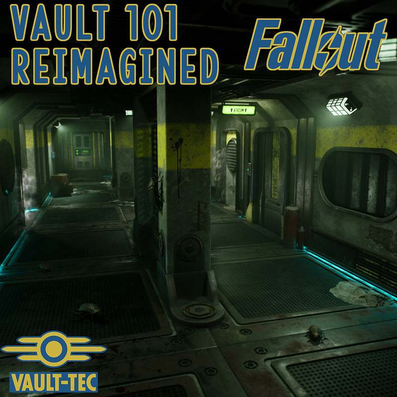
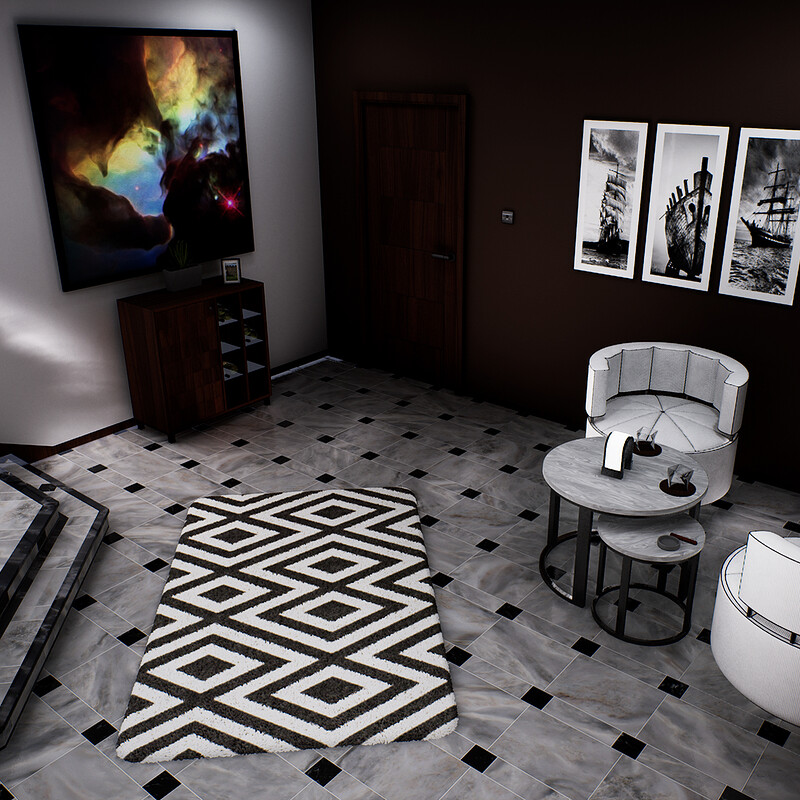

PORTFOLIO
Showcased Work

Dark Angels Bolter
First full model using the Blender pipeline.

Red Menace: Beyond the Threshold
A detailed enviroment showcasing VFX, texturing and modular set creation and utilisation with a heavy focus on PBR materials and atmospheric storytelling.

Witchhunter's Ordained Rifle
A weapon prop created to further develop my skills with PBR materials and texturing.

Vault 101 - Reimagined
A modular envrioment recreating the opening scenes from Fallout 3.

Arch Viz - Dining Room and Social Area
An early project from my BA wherein I created an environment with for use as an arch viz artefact.